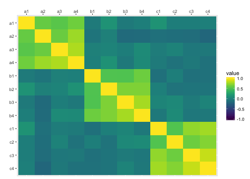
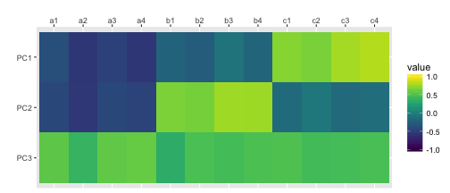
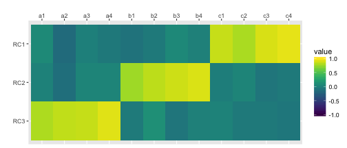
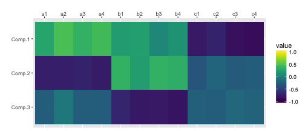
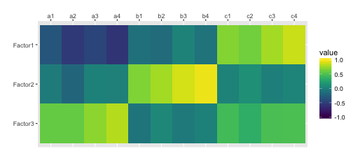
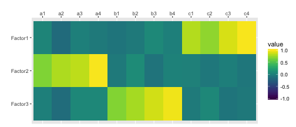
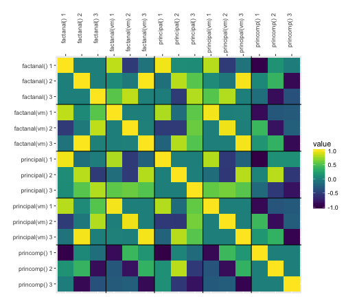

I use the psych package for SPSS-style PCA
suppressMessages( library(tidyverse) ) suppressMessages( library(psych) ) suppressMessages( library(viridis) )
First, I'll simulate some data with an underlying structure of three factors.
a <- rnorm(100, 0, 1) b <- rnorm(100, 0, 1) c <- rnorm(100, 0, 1) df <- data.frame( id = seq(1,100), a1 = a + rnorm(100, 0, 1), a2 = a + rnorm(100, 0, .8), a3 = a + rnorm(100, 0, .8), a4 = a + rnorm(100, 0, .4), b1 = b + rnorm(100, 0, 1), b2 = b + rnorm(100, 0, .8), b3 = b + rnorm(100, 0, .6), b4 = b + rnorm(100, 0, .4), c1 = c + rnorm(100, 0, 1), c2 = c + rnorm(100, 0, .8), c3 = c + rnorm(100, 0, .6), c4 = c + rnorm(100, 0, .4) )
Select just the columns you want for your PCA. You can visualise their correlations with cor() and ggplot().
traits <- df %>% select(-id) traits %>% cor() %>% as.data.frame() %>% mutate(var1 = rownames(.)) %>% gather("var2", "value", a1:c4) %>% mutate(var1 = factor(var1), var1 = factor(var1, levels = rev(levels(var1)))) %>% ggplot(aes(var2, var1, fill=value)) + geom_tile() + scale_x_discrete(position = "top") + xlab("") + ylab("") + scale_fill_viridis(limits=c(-1, 1))

Determine the number of factors to extract. Here I use the SPSS-style default criterion of Eigenvalues > 1
ev <- eigen(cor(traits)); nfactors <- length(ev$values[ev$values > 1]); nfactors
## [1] 3
traits.principal <- principal(traits, nfactors=nfactors, rotate="none", scores=TRUE) traits.principal
## Principal Components Analysis ## Call: principal(r = traits, nfactors = nfactors, rotate = "none", scores = TRUE) ## Standardized loadings (pattern matrix) based upon correlation matrix ## PC1 PC2 PC3 h2 u2 com ## a1 -0.38 -0.43 0.55 0.64 0.36 2.7 ## a2 -0.56 -0.55 0.38 0.76 0.24 2.7 ## a3 -0.48 -0.44 0.56 0.73 0.27 2.9 ## a4 -0.56 -0.46 0.58 0.86 0.14 2.9 ## b1 -0.23 0.66 0.32 0.58 0.42 1.7 ## b2 -0.28 0.63 0.48 0.71 0.29 2.3 ## b3 -0.10 0.76 0.45 0.78 0.22 1.7 ## b4 -0.20 0.75 0.48 0.83 0.17 1.9 ## c1 0.68 -0.16 0.50 0.74 0.26 2.0 ## c2 0.65 -0.06 0.45 0.62 0.38 1.8 ## c3 0.77 -0.17 0.45 0.83 0.17 1.7 ## c4 0.81 -0.14 0.47 0.90 0.10 1.7 ## ## PC1 PC2 PC3 ## SS loadings 3.31 2.93 2.74 ## Proportion Var 0.28 0.24 0.23 ## Cumulative Var 0.28 0.52 0.75 ## Proportion Explained 0.37 0.33 0.30 ## Cumulative Proportion 0.37 0.70 1.00 ## ## Mean item complexity = 2.2 ## Test of the hypothesis that 3 components are sufficient. ## ## The root mean square of the residuals (RMSR) is 0.06 ## with the empirical chi square 43.68 with prob < 0.1 ## ## Fit based upon off diagonal values = 0.97
scores.principal <- traits.principal$scores
cor(scores.principal, traits) %>% as.data.frame() %>% mutate(var1 = rownames(.)) %>% gather("var2", "value", a1:c4) %>% mutate(var1 = factor(var1), var1 = factor(var1, levels = rev(levels(var1)))) %>% ggplot(aes(var2, var1, fill=value)) + geom_tile() + scale_x_discrete(position = "top") + xlab("") + ylab("") + scale_fill_viridis(limits=c(-1, 1))

traits.varimax <- principal(traits, nfactors=nfactors, rotate="varimax", scores=TRUE) traits.varimax
## Principal Components Analysis ## Call: principal(r = traits, nfactors = nfactors, rotate = "varimax", ## scores = TRUE) ## Standardized loadings (pattern matrix) based upon correlation matrix ## RC1 RC3 RC2 h2 u2 com ## a1 0.07 0.80 0.02 0.64 0.36 1.0 ## a2 -0.16 0.85 -0.13 0.76 0.24 1.1 ## a3 0.00 0.86 0.04 0.73 0.27 1.0 ## a4 -0.05 0.93 0.05 0.86 0.14 1.0 ## b1 -0.10 -0.04 0.75 0.58 0.42 1.0 ## b2 -0.05 0.11 0.83 0.71 0.29 1.0 ## b3 0.06 -0.08 0.88 0.78 0.22 1.0 ## b4 0.00 0.00 0.91 0.83 0.17 1.0 ## c1 0.86 0.03 -0.02 0.74 0.26 1.0 ## c2 0.78 -0.04 0.04 0.62 0.38 1.0 ## c3 0.91 -0.04 -0.08 0.83 0.17 1.0 ## c4 0.94 -0.07 -0.04 0.90 0.10 1.0 ## ## RC1 RC3 RC2 ## SS loadings 3.12 2.97 2.90 ## Proportion Var 0.26 0.25 0.24 ## Cumulative Var 0.26 0.51 0.75 ## Proportion Explained 0.35 0.33 0.32 ## Cumulative Proportion 0.35 0.68 1.00 ## ## Mean item complexity = 1 ## Test of the hypothesis that 3 components are sufficient. ## ## The root mean square of the residuals (RMSR) is 0.06 ## with the empirical chi square 43.68 with prob < 0.1 ## ## Fit based upon off diagonal values = 0.97
scores.varimax <- traits.varimax$scores
cor(scores.varimax, traits) %>% as.data.frame() %>% mutate(var1 = rownames(.)) %>% gather("var2", "value", a1:c4) %>% mutate(var1 = factor(var1), var1 = factor(var1, levels = rev(levels(var1)))) %>% ggplot(aes(var2, var1, fill=value)) + geom_tile() + scale_x_discrete(position = "top") + xlab("") + ylab("") + scale_fill_viridis(limits=c(-1, 1))

traits.princomp <- princomp(traits) traits.princomp$loadings[,1:nfactors]
## Comp.1 Comp.2 Comp.3 ## a1 0.15820780 -0.4617699 -0.17934642 ## a2 0.26615693 -0.4484868 -0.04290847 ## a3 0.19273122 -0.4152677 -0.16167971 ## a4 0.21263227 -0.4019597 -0.15180848 ## b1 0.12346266 0.2370665 -0.47564975 ## b2 0.11925133 0.1270988 -0.47371478 ## b3 0.02684509 0.1892191 -0.43103531 ## b4 0.06809953 0.1692082 -0.43750275 ## c1 -0.47163555 -0.2202787 -0.17413521 ## c2 -0.40263862 -0.1269636 -0.16972942 ## c3 -0.46174663 -0.1710853 -0.11817103 ## c4 -0.43495168 -0.1445913 -0.12595069
scores.princomp <- traits.princomp$scores[,1:nfactors]
cor(scores.princomp, traits) %>% as.data.frame() %>% mutate(var1 = rownames(.)) %>% gather("var2", "value", a1:c4) %>% mutate(var1 = factor(var1), var1 = factor(var1, levels = rev(levels(var1)))) %>% ggplot(aes(var2, var1, fill=value)) + geom_tile() + scale_x_discrete(position = "top") + xlab("") + ylab("") + scale_fill_viridis(limits=c(-1, 1))

traits.fa <- factanal(traits, nfactors, rotation="none", scores="regression") print(traits.fa, digits=2, cutoff=0, sort=FALSE)
## ## Call: ## factanal(x = traits, factors = nfactors, scores = "regression", rotation = "none") ## ## Uniquenesses: ## a1 a2 a3 a4 b1 b2 b3 b4 c1 c2 c3 c4 ## 0.57 0.35 0.33 0.06 0.58 0.44 0.27 0.15 0.37 0.51 0.22 0.06 ## ## Loadings: ## Factor1 Factor2 Factor3 ## a1 -0.32 -0.03 0.57 ## a2 -0.53 -0.19 0.57 ## a3 -0.45 0.01 0.68 ## a4 -0.56 0.00 0.79 ## b1 -0.11 0.64 -0.08 ## b2 -0.15 0.73 0.05 ## b3 0.02 0.85 -0.04 ## b4 -0.10 0.92 0.01 ## c1 0.66 0.03 0.43 ## c2 0.61 0.11 0.33 ## c3 0.75 0.00 0.46 ## c4 0.85 0.03 0.47 ## ## Factor1 Factor2 Factor3 ## SS loadings 3.05 2.56 2.48 ## Proportion Var 0.25 0.21 0.21 ## Cumulative Var 0.25 0.47 0.67 ## ## Test of the hypothesis that 3 factors are sufficient. ## The chi square statistic is 47.71 on 33 degrees of freedom. ## The p-value is 0.047
scores.fa <- traits.fa$scores
cor(scores.fa, traits) %>% as.data.frame() %>% mutate(var1 = rownames(.)) %>% gather("var2", "value", a1:c4) %>% mutate(var1 = factor(var1), var1 = factor(var1, levels = rev(levels(var1)))) %>% ggplot(aes(var2, var1, fill=value)) + geom_tile() + scale_x_discrete(position = "top") + xlab("") + ylab("") + scale_fill_viridis(limits=c(-1, 1))

traits.fa.vm <- factanal(traits, nfactors, rotation="varimax", scores="regression") print(traits.fa.vm, digits=2, cutoff=0, sort=FALSE)
## ## Call: ## factanal(x = traits, factors = nfactors, scores = "regression", rotation = "varimax") ## ## Uniquenesses: ## a1 a2 a3 a4 b1 b2 b3 b4 c1 c2 c3 c4 ## 0.57 0.35 0.33 0.06 0.58 0.44 0.27 0.15 0.37 0.51 0.22 0.06 ## ## Loadings: ## Factor1 Factor2 Factor3 ## a1 0.04 0.65 0.00 ## a2 -0.15 0.78 -0.14 ## a3 -0.01 0.82 0.06 ## a4 -0.04 0.97 0.06 ## b1 -0.08 -0.04 0.64 ## b2 -0.04 0.09 0.74 ## b3 0.07 -0.09 0.85 ## b4 0.00 0.02 0.92 ## c1 0.79 0.00 -0.03 ## c2 0.70 -0.06 0.05 ## c3 0.88 -0.01 -0.08 ## c4 0.97 -0.06 -0.05 ## ## Factor1 Factor2 Factor3 ## SS loadings 2.86 2.65 2.57 ## Proportion Var 0.24 0.22 0.21 ## Cumulative Var 0.24 0.46 0.67 ## ## Test of the hypothesis that 3 factors are sufficient. ## The chi square statistic is 47.71 on 33 degrees of freedom. ## The p-value is 0.047
scores.fa.vm <- traits.fa.vm$scores
cor(scores.fa.vm, traits) %>% as.data.frame() %>% mutate(var1 = rownames(.)) %>% gather("var2", "value", a1:c4) %>% mutate(var1 = factor(var1), var1 = factor(var1, levels = rev(levels(var1)))) %>% ggplot(aes(var2, var1, fill=value)) + geom_tile() + scale_x_discrete(position = "top") + xlab("") + ylab("") + scale_fill_viridis(limits=c(-1, 1))

The functions principal(rotation = "varimax") and factanal(rotation = "varimax") are nearly (but not perfectly) identical.
scores.fa <- traits.fa$scores colnames(scores.principal) <- c("principal() 1", "principal() 2", "principal() 3") colnames(scores.varimax) <- c("principal(vm) 1", "principal(vm) 2", "principal(vm) 3") colnames(scores.princomp) <- c("princomp() 1", "princomp() 2", "princomp() 3") colnames(scores.fa) <- c("factanal() 1", "factanal() 2", "factanal() 3") colnames(scores.fa.vm) <- c("factanal(vm) 1", "factanal(vm) 2", "factanal(vm) 3") cbind( scores.princomp, scores.principal, scores.fa, scores.varimax, scores.fa.vm ) %>% cor() %>% as.data.frame() %>% mutate(var1 = rownames(.)) %>% gather("var2", "value", 1:15) %>% mutate(var1 = factor(var1), var1 = factor(var1, levels = rev(levels(var1)))) %>% ggplot(aes(var2, var1, fill=value)) + geom_tile() + scale_x_discrete(position = "top") + xlab("") + ylab("") + scale_fill_viridis(limits=c(-1, 1)) + geom_hline(yintercept = 3.5) + geom_hline(yintercept = 6.5) + geom_hline(yintercept = 9.5) + geom_hline(yintercept = 12.5) + geom_vline(xintercept = 3.5) + geom_vline(xintercept = 6.5) + geom_vline(xintercept = 9.5) + geom_vline(xintercept = 12.5) + theme(axis.text.x=element_text(angle=90,hjust=1))
